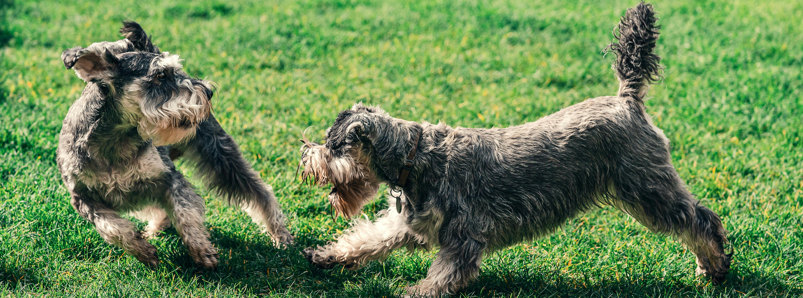

About Minuture Schnauzer
Table of Contents
Traits
Height: Males 12 to 14 in (30 to 36 cm), Females 11 to 13 in (28 to 33 cm)
Weight: Males 11 to 20 lb (5.0 to 9.1 kg), Females 11 to 20 lb (5.0 to 9.1 kg)
Color Black, pepper and salt, black and silver
Appearance
Miniature Schnauzers have a very square-shaped build
They have a double coat, with wiry exterior fur and a soft undercoat
In show trim, the coat is kept short on the body, but the fur on the ears, legs, belly, and face is retained
Grooming
Standard
Schnauzers have a specific groom cut that is standard among the schnauzer breeds.
Schnauzers require regular grooming, either by stripping, or by clipping.
As Pets
Miniature Schnauzers are often groomed differently (usually via clipping) from show dogs (often using stripping).
- recommended approximately every six weeks.
- Clipping, using a mechanical clippers (or shaver), produces a soft, silky, skin-close trim.
All schnauzers, whether they are Miniatures, Standards, or Giants, often sport a beard, created by allowing the hair around their noses to grow out.